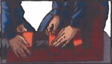
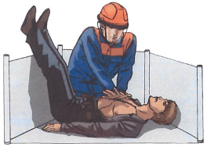

Билет №19
Вопрос 1. С каким электроинструментом запрещается работать? (ИОТВ-32-15, п.3.4.)
Ответ:
Запрещается работать электроинструментом, у которого истек срок периодической проверки (не реже одного раза в 6 месяцев), а также при возникновении хотя бы одного из следующих неисправностей:
повреждение штепсельного соединения, кабеля или его защитной трубки;
повреждение крышки щеткодержателя;
нечеткая работа выключателя;
искрение щеток на коллекторе, сопровождающееся появлением кругового огня на его поверхности;
появление дыма или запаха, характерного для горящей изоляции;
появление повышенного шума, стука, вибрации;
поломка или появление трещин в корпусной детали, рукоятке, защитном ограждении;
повреждение рабочей части электроинструмента;
исчезновение электрической связи между металлическими частями корпуса и нулевым защитным штырем питательной вилки;
неисправность пускового устройства.
Вопрос 2. Шум. Защита от шума. (ИОТВ-82-15, п.7.)
Ответ:
7.1. Длительное воздействие шума, уровень и параметры которого превышают допустимое значение, приводит к преждевременному утомлению, снижению работоспособности, возрастанию опасности заболевания. Без применения соответствующих средств защиты воздействие шума может привести к потере слуха. После воздействия сильных и высокочастотных шумов может возникнуть головная боль, тошнота, головокружение.
7.2. Самый малый уровень звука, воспринимаемый ухом человека (порог слышимости), равен 10дБ. Повышение уровня интенсивности звука до 130дБ вызывает болевые ощущения органов слуха.
Зоны с уровнем звука выше 80дБ обозначаются знаками безопасности, в них должны использоваться средства индивидуальной защиты.
7.3. Для снижения уровня шума выполняются следующие мероприятия:
ограждение работающих агрегатов звукоизолирующими кожухами;
рациональное размещение рабочих мест;
создание шумоизолирующих зон в различных местах нахождения работающего;
применение малошумных технологических процессов;
установка звукофильтров в воздухопроводах;
облицовка вентиляционных камер звукопоглощающим материалом;
использование рациональных режимов труда и отдыха работников шумных участков предприятия.
7.4. Если устранить или ослабить шум на рабочем месте невозможно, то обязательно применяют индивидуальные средства защиты:
противошумные наушники, закрывающие ушную раковину снаружи;
противошумные вкладыши, перекрывающие наружный слуховой проход.
7.5. Одновременное воздействие шума и вибрации на работающего наносят больший вред, чем воздействие каждого фактора в отдельности.
Вопрос 3. Газоопасные работы, проводимые без оформления наряда-допуска. (ПИ-234-14, п.2.2.-2.4., 2.12.)
Ответ:
2.2. В Управлении по каждому цеху (участку) должен быть разработан перечень газоопасных работ.
В перечне должны быть раздельно указаны газоопасные работы:
I - проводимые с оформлением наряда-допуска;
II - проводимые без оформления наряда-допуска, но с обязательной регистрацией таких работ перед их началом в журнале.
2.3. Перечень газоопасных работ разрабатывается начальниками цехов (участков), согласовывается с отделом охраны труда и промышленной безопасности и утверждается главным инженером. Перечень газоопасных работ должен периодически не реже 1 раза в год пересматриваться и переутверждаться.
2.4. В перечне должны быть указаны: цех (участок), место и характер работы, возможные вредные и опасные производственные факторы при ее проведении, категория исполнителей (производственный персонал), основные мероприятия, обеспечивающие безопасность выполняемых работ.
2.5. При возникновении необходимости проведения газоопасных работ, не включенных в утвержденный перечень, они должны выполняться по наряду-допуску в соответствии с требованиями настоящей инструкции с последующим внесением их в 10-дневный срок в перечень в установленном пп 2.3. и 2.4. порядке.
2.6. Периодически повторяющиеся газоопасные работы, являющиеся неотъемлемой частью технологического процесса, характеризующиеся аналогичными условиями их проведения, постоянством места и характера работ, определенным составом исполнителей, могут проводиться без оформления наряда-допуска. Все эти работы включаются в перечень газоопасных работ, составляемый в соответствии с п.п.2.2.-2.4.настоящей инструкции.
2.7. Меры безопасности при проведении таких работ должны быть изложены в технологических регламентах, инструкциях по рабочим местам или в настоящей инструкции. Такие работы регистрируются в цехе в журнале учета газоопасных работ (приложение 1), проводимых без оформления наряда-допуска. Журнал должен быть прошнурован, скреплен мастичной или сургучной печатью. Страницы в журнале должны быть пронумерованы. Срок хранения журнала - не менее 3 мес. со дня его окончания.
2.8. Газоопасные работы, связанные с предупреждением развития аварийных ситуаций и необходимостью локализации аварий, проводятся в соответствии с планами ликвидации аварий.
2.9. По НГДУ «Талаканнефть» разработан типовой перечень с указанием необходимых мер безопасности при проведении газоопасных работ, утвержденный главным инженером НГДУ "Талаканнефть».
2.10. Контроль воздушной среды необходимо производить в соответствии с СТО 21-2013 ОАО «Сургутнефтегаз» «Контроль воздушной среды производственный лабораторный».
2.11. Каждая газоопасная работа, выполняемая без оформления наряда-допуска, состоит из двух этапов:
подготовка объекта к проведению газоопасной работы;
непосредственное проведение газоопасной работы.
2.12. Газоопасные работы, выполняемые без оформления наряда-допуска, проводятся в дневное и ночное время суток. Перед проведением газоопасных работ без оформления наряда-допуска технологическим персоналом в ночное время, регистрируемых в журнале (приложение 1), уведомляется по телефону начальник смены ЦИТС.
Вопрос 4. Назовите порядок оказания первой помощи при сильном кровотечении из раны на бедре. (Инструкция для проведения обучения оказания первой помощи пострадавшим на производстве, п. 9.2.)
Ответ:
Правила оказания помощи в случаях сильного кровотечения из раны на бедре:
Внимание! Бездействие в течение 2-3 минут в случае ранения бедренной артерии неминуемо приведет к смерти пострадавшего от невосполнимой потери крови.
Внимание! Наложить жгут на бедренную артерию невозможно без помощника, который должен приподнять ногу. При его отсутствии не следует терять время на попытки наложить жгут самостоятельно. Потерянное время обязательно приведет к смерти.
Правило первое.
Прижать бедренную артерию кулаком чуть ниже паховой складки.
Правило втрое.
Наложить жгут на бедро через гладкий твердый предмет, например, скатку бинта, и убедиться, что лужа крови перестала увеличиваться в диаметре.
Правило третье.
Наложить на рану стерильную повязку.
Правило четвертое.
Вложить записку с указанием времени наложения жгута.
Если во время давления кулаком на бедренную артерию продолжается кровотечение из раны? Продолжать давить кулаком на бедро с максимальным усилием и ждать, пока кровотечение полностью не остановится. Ни в коем случае нельзя прекращать давление.
Вопрос 5. Требования охраны труда при возникновении аварийных ситуаций при перевозке людей автотранспортом. (ИОТВ-126-15, п.4.)
Ответ:
4.1. При возникновении пожара в автобусе или взрыва, водитель и ответственный по салону автобуса обязаны:
после полной остановки автобуса открыть все двери и без паники эвакуировать пассажиров;
при блокировании дверей, эвакуацию проводить через запасные выходы и окна, предварительно разбив стекла специальными молоточками.
4.2. Сообщить в пожарную охрану по телефону 01 или 52553 на Талаканском НГКМ, 01 в п.Витим, 01 в г.Сургуте. Начальнику смены ЦИТС по телефону 52500, 52526 назвать адрес и место возникновения пожара.
4.3. Принять участие в тушении загорания всеми имеющимися средствами.
4.4. При возникновении непредвиденных, нештатных ситуаций, в результате которых произошло экстренное торможение транспортного средства (в том числе ДТП), водителю и ответственному в салоне автобуса, необходимо убедиться в том, что никто из пассажиров не пострадал, не получил травмы и ушибы. При выявлении любых телесных повреждений у участников дорожного движения оказать первую доврачебную помощь, при необходимости вызвать «Скорую помощь» по телефону 52527 Талаканское НГКМ, 03 в п.Витим и г.Сургуте или отправить пострадавшего в медицинское учреждение. Сообщить начальнику смены ЦИТС по телефону 52500, 52526, транспортный участок НГДУ «Талаканнефть» 41-04-58, 41-03-69.
4.5. При обнаружении признаков болезненного состояния или алкогольного, наркотического опьянения водителя сообщить об этом ответственному за отправку.
4.6. При обнаружении в салоне посторонних предметов, сумок, коробок необходимо покинуть салон и сообщить об обнаруженном в соответствующие органы или ответственному за отправку.
Вопрос 6. В каких случаях пострадавшему проводятся реанимационные мероприятия и как они выполняются (с отработкой практических навыков на тренажере). (Инструкция для проведения обучения оказания первой помощи пострадавшим на производстве, п. 4.2.-5.9.)
Ответ:
4.2 Последовательность действий при оказании первой медицинской помощи:
Такая очередность действий позволит сохранить жизнь пострадавшего до прибытия медицинских работников |
1. |
Нет сознания и нет пульса на сонной артерии (клиническая смерть) |
 |
Приступить к реанимации (см. п.5) |
2. |
Нет сознания, но есть пульс на сонной артерии (обморок или начало развития комы) |
 |
Попытаться привести пострадавшего в сознание (см. п.6)
Если в течени 3-4 минут это не удалось, обязательно повернуть его на живот (см. п.7) |
3. |
Обильное кровотечение |

|
Быстро пережать конечность выше раны и наложить жгут (см. п.9) |
4. |
Наличие раны |

|
Наложить стерильные повязки (см. п.10.3) |
5. |
Признаки перелома конечностей |
 |
Наложить транспортную шину (см. п.11) |
5. Правила определения признаков клинической смерти:
Правило первое.
Чтобы сделать вывод о наступлении клинической смерти у неподвижно лежащего пострадавшего, достаточно убедиться в отсутствии сознания и пульса на сонной артерии.
Правило второе.
Не следует терять время на определение сознания путем ожидания ответов на вопросы: «Все ли у тебя в порядке? Можно ли приступить к оказанию помощи?». Надавливание на шею в области сонной артерии является сильным болевым раздражителем.
Правило третье.
Не следует терять время на определение признаков дыхания. Они трудноуловимы, и на их определение с помощью ворсинок ватки, зеркальца или наблюдения за движением грудной клетки можно потерять неоправданно много времени. Самостоятельное дыхание без пульса на сонной артерии продолжается не более минуты, а вдох искусственного дыхания взрослому человеку ни при каких обстоятельствах не может причинить вреда.
Если подтвердились признаки клинической смерти? Быстро освободить грудную клетку от одежды приступить к сердечно-легочной реанимации см. пп.5.5; 5.6.

5.1. Правила определения пульса на сонной артерии:
Правило первое.
Расположить четыре пальца на шее пострадавшего (см. п.5.4) и убедиться в отсутствии пульса на сонной артерии.
Правило второе.
Определять пульс следует не менее 10 секунд.
5.2. Правила освобождения грудной клетки от одежды для проведения реанимации:
Правило первое.
Расстегнуть пуговицы рубашки и освободить грудную клетку.
Правило второе.
Джемпер, свитер или водолазку приподнять и сдвинуть к шее.
Правило третье.
Майку, футболку или любое нательное белье из тонкой ткани можно не снимать. Но прежде чем наносить удар по грудине или приступать к непрямому массажу сердца, следует убедиться, что под тканью нет нательного крестика или кулона.
Правило четвертое.
Поясной ремень обязательно расстегнуть или ослабить. Известны случаи, когда во время проведения непрямого массажа сердца печень повреждалась о край жесткого ремня.

Внимание! Перед тем как приступить к реанимации, необходимо уложить пострадавшего на жесткую и ровную поверхность, освободить грудную клетку от одежды и определить анатомические ориентиры (см. п. 5.4).
5.3. Правила освобождения грудной клетки от одежды для проведения реанимации, в случаях, когда на женщине надет бюстгальтер - его надо сдвинуть ближе к шее.
5.4. Анатомические ориентиры, необходимые для проведения сердечно-легочной реанимации:

5.5. Правила проведения непрямого массажа сердца и безвентиляционной реанимации:
Правило первое.
Расположить основание правой ладони выше мечевидного отростка так, чтобы большой палец был направлен на подбородок или живот пострадавшего. Левую ладонь расположить на ладони правой руки.
Правило второе.
Переместить центр тяжести на грудину пострадавшего и проводить непрямой массаж сердца прямыми руками.
Правило третье.
Продавливать грудную клетку не менее чем на 3-5 см с частотой не реже 60 раз в минуту.
Правило четвертое.
Каждое следующее надавливание начинать только после того, как грудная клетка вернется в исходное положение.
Правило пятое.
Оптимальное соотношение надавливаний на грудную клетку и вдохов искусственной вентиляции легких - 30:2, независимо от количества участников реанимации.
Правило шестое.
По возможности приложить холод к голове.
 Внимание! При каждом надавливании на грудную клетку происходит активный выдох, а при ее возвращении в исходное положение — пассивный вдох. Когда выделения
изо рта пострадавшего представляют угрозу для здоровья спасающего, можно ограничиться проведением непрямого массажа сердца, т.е. безвентиляционным вариантом реанимации.
Внимание! При каждом надавливании на грудную клетку происходит активный выдох, а при ее возвращении в исходное положение — пассивный вдох. Когда выделения
изо рта пострадавшего представляют угрозу для здоровья спасающего, можно ограничиться проведением непрямого массажа сердца, т.е. безвентиляционным вариантом реанимации.
Внимание! Чтобы непрямой массаж сердца был эффективным, его необходимо проводить на ровной жесткой поверхности.
Если под ладонью появился неприятный хруст (признак перелома ребер)? Уменьшить не глубину и силу, а ритм надавливаний и ни в коем случае не прекращать непрямой массаж сердца.
5.6. Правила проведения вдоха искусственной вентиляции легких (далее - ИВЛ) способом «изо рта в рот»:
Правило первое.
Правой рукой обхватить подбородок так, чтобы пальцы, расположенные на нижней челюсти и щеках пострадавшего, смогли разжать и раздвинуть его губы.
Правило второе.
Левой рукой зажать нос.
Правило третье.
Запрокинуть голову пострадавшего и удерживать ее в таком положении до окончания проведения вдоха.
Правило четвертое.
Плотно прижаться губами к губам пострадавшего и сделать в него максимальный выдох. Если во время проведения вдоха ИВЛ пальцы правой руки почувствуют раздувание щек, можно сделать безошибочный вывод о неэффективности попытки вдоха.
Правило пятое.
Если первая попытка вдоха ИВЛ оказалась неудачной, следует увеличить угол запрокидывания головы и сделать повторную попытку.
Правило шестое.
Если вторая попытка вдоха ИВЛ оказалась неудачной, то необходимо сделать 30 надавливаний на грудину, повернуть пострадавшего на живот, очистить пальцами ротовую полость и только затем сделать вдох ИВЛ.

Внимание! Нет необходимости разжимать челюсти пострадавшего, так как зубы не препятствуют прохождению воздуха. Достаточно разжать только губы.
Если невозможно преодолеть чувство брезгливости или выделения изо рта пострадавшего представляют угрозу для здоровья спасателя? Следует использовать специальную пластиковую маску для проведения ИВЛ способом «изо рта в рот».
5.6.1. Правила использования защитной маски для безопасного проведения ИВЛ:
Внимание! Когда контакт с выделениями из ротовой полости пострадавшего представляет угрозу инфицирования, отравления ядовитыми газами, искусственное дыхание можно проводить только через специальную защитную маску.
Правило первое.
Правильно взять маску в правую руку. Захватить ее пальцами правой руки так, чтобы большая часть ладони осталась свободной.
Правило второе.
Свободной частью ладони обхватить подбородок. Придерживая пальцами маску на лице, запрокинуть голову пострадавшего.
Правило третье.
Левой рукой прижать маску к лицу.
Правило четвертое.
Прижаться губами к отверстию с защитным клапаном и сделать в него выдох.
 Когда проведение ИВЛ «изо рта в рот» представляет угрозу для здоровья спасателя, а защитной маски нет? Проводить непрямой массаж сердца - безвентиляционную реанимацию (см. п.5.5) - до прибытия медицинского персонала или появления защитной маски.
Когда проведение ИВЛ «изо рта в рот» представляет угрозу для здоровья спасателя, а защитной маски нет? Проводить непрямой массаж сердца - безвентиляционную реанимацию (см. п.5.5) - до прибытия медицинского персонала или появления защитной маски.
5.7. Правила проведения реанимации более 10-15 минут:
Внимание! Мужчина со средними физическими данными может проводить комплекс сердечно-легочной реанимации не более 3-4 минут. Вдвоем с помощником - не более 10 минут. Втроем — с лицами любого пола, возраста и физических данных - более часа.
Правило первое.
Первый участник делает вдох искусственного дыхания. Контролирует реакцию зрачков и пульс на сонной артерии и информирует партнеров о состоянии пострадавшего: «Есть реакция зрачков!» или «Есть пульс!» и т.п.
Правило второе.
Второй участник проводит непрямой массаж сердца и отдает команду: «Вдох!». Контролирует эффективность вдоха искусственного дыхания по подъему грудной клетки и констатирует: «Вдох прошел!» или «Нет вдоха!».
Правило третье.
Третий участник приподнимает ноги пострадавшего для улучшения притока крови к сердцу. Восстанавливает силы и готовится сменить второго участника. Координирует действия.
Правило четвертое.
Через каждые 2-3 минуты реанимации обязательно производится смена участников и проверяется наличие самостоятельного пульса.
Правило пятое.
По возможности приложить холод к голове пострадавшего.
 5.8. Правила расположения участников реанимации:
5.8. Правила расположения участников реанимации:
Внимание! Такое расположение участников позволяет:
избегать столкновений головами;
рационально использовать силы (физически слабого участника следует чаще располагать в ногах пострадавшего, но при этом он должен координировать действия всей команды);
привлечь к реанимации любого необученного человека.
Сначала новичку следует доверить поддерживание ног, а затем задействовать в проведении реанимации.
5.9. Правила проведения реанимации в ограниченном пространстве:
Правило первое.
Комплекс реанимации можно проводить только в положении пострадавшего лежа на спине, на ровной жесткой поверхности.
Правило второе.
Обеспечить возможность запрокидывания головы пострадавшего для проведения ИВЛ.
Вопрос 7. Техническое обслуживание установок пожарной автоматики. Периодичность, типовые операции, регламентирующие документы, оформление документации. (Положение о техническом обслуживании и текущем ремонте средств автоматизации и телемеханизации, контрольно-измерительных приборов, СТО 232-2008,ПИ-74-15, ПИ-75-13, ПИ-156-15,ПИ-238-15, ПИ-503-14, ПИ-504-14).
Ответ:
Вопрос 8. Проверка средств сигнализации, противоаварийных защит и блокировок установки для получения битума. Периодичность, типовые операции, регламентирующие документы, оформление документации. (Положение о техническом обслуживании и текущем ремонте средств автоматизации телемеханизации, контрольно-измерительных приборов, СТО-36-2007, ПИ-284-15).
Ответ: